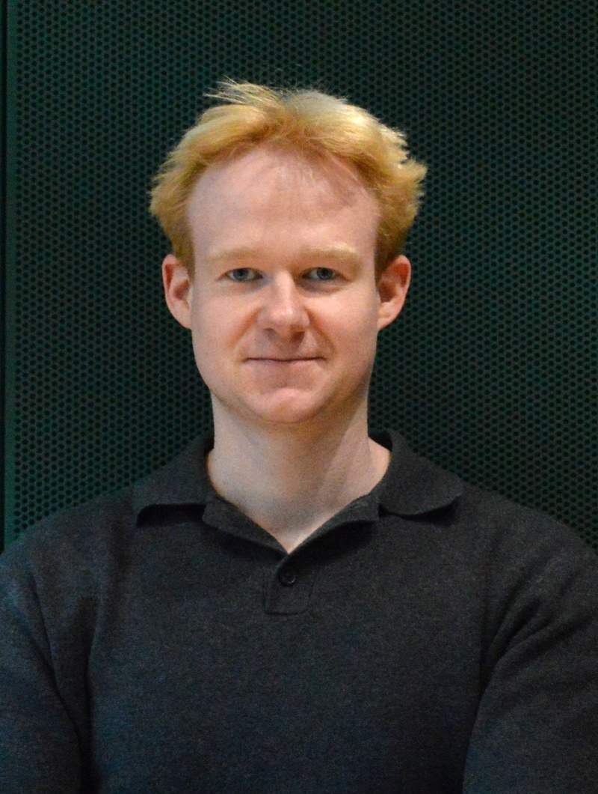
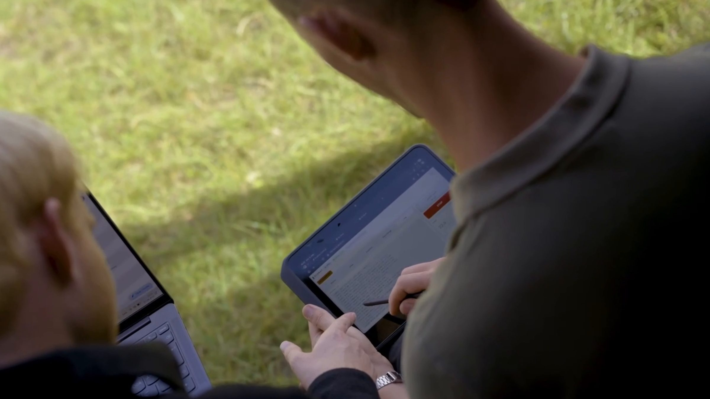
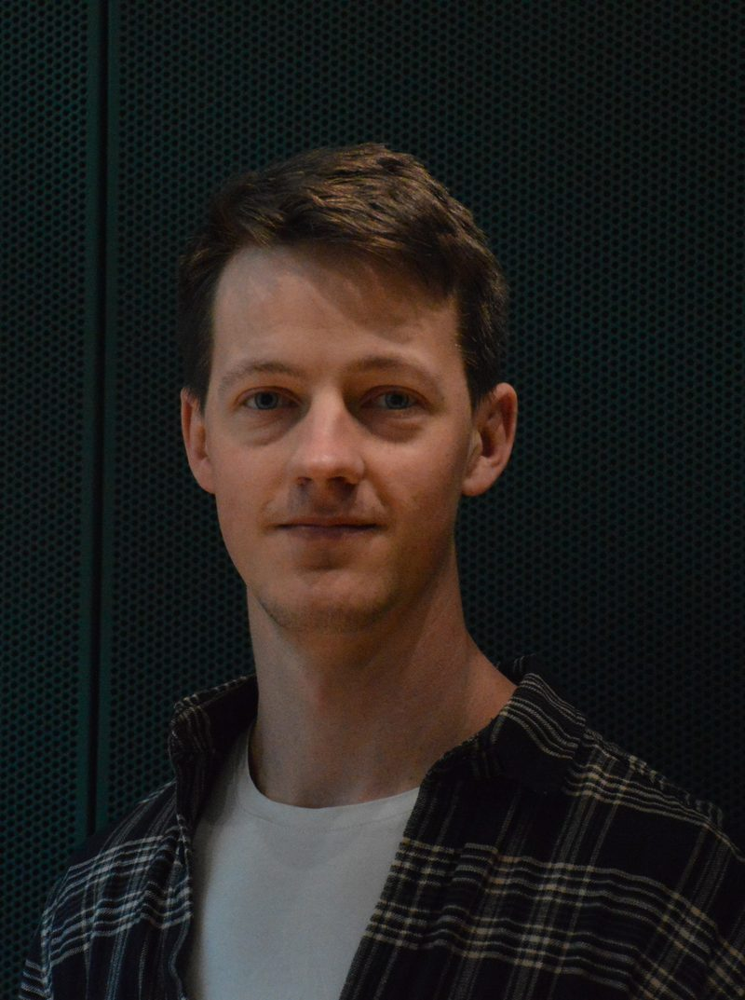
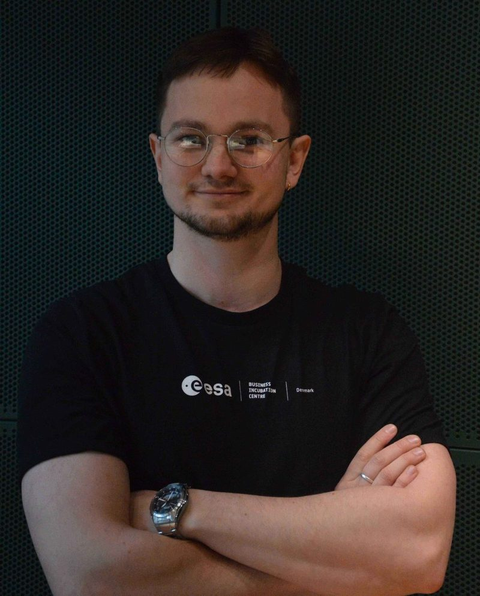
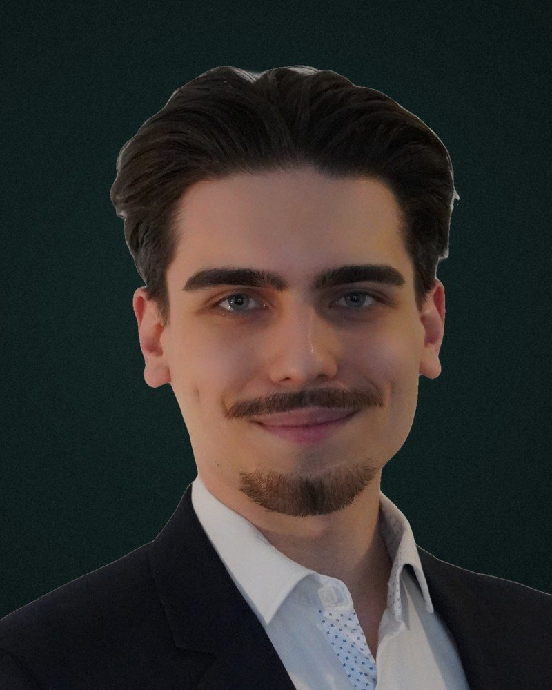

Benjamin Tvorup Christensen
Medstifter og CEO
Ansvarlig for salg og strategi, pilotprojekter og partnerskaber.
LinkedIn
En ingeniørvirksomhed i Aarhus, der bygger laserlugning til europæiske landbrug.
Ukrudt i rækken fjernes stadig med håndkraft eller sprøjtemidler. Arbejdskraft er dyr og svær at få, reglerne for sprøjtemidler bliver strammere, og avlerne har brug for en måde at holde markerne rene på uden kemi.
GreenGuard blev stiftet i 2025 for at gøre lugning uden kemi praktisk og til at betale for små og mellemstore bedrifter, ikke kun de største. Vi udvikler selv optik, elektronik, software og maskine og tester dem i danske marker hver sæson.
Ingeniører med baggrund i mekanik, optik, robotteknologi og computer vision.

Medstifter og CEO
Ansvarlig for salg og strategi, pilotprojekter og partnerskaber.
LinkedIn
Medstifter og CTO
Leder udviklingen af optik, laserstyring og integration med traktoren.
LinkedIn
Udviklingschef
Leder mekatronik, software og systemintegration.
LinkedIn
Computer vision-ingeniør
Udvikler de modeller, der finder hver ukrudtsplante.
LinkedInVil du have en demo, et pilotforsøg på din bedrift eller tale om teknikken? Kontakt os direkte.
Bautavej 1A
8210 Aarhus V